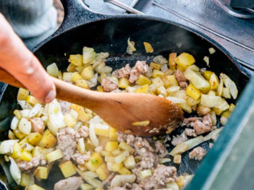

Fennel Sausage Hash

Description
I'm a big fan of hashes. They're easy to make. This one reminds me of an eastern European style dish. The use of the nutritional yeast adds a cheesiness that I appreciate as someone who can't have lactose. Great on a cold day. Makes 4 servings.
Ingredients
- 1 tbsp Organic Virgin Olive Oil
- 1 large White Onion (sliced thin)
- 2 bulbs Fennel (sliced thin)
- 1 tbsp Fennel Seeds (this is a cheat, since I don't think that Trader Joe's carries this)
- 1 large Organic Gold Potato (small cubes)
- 1 pound Ground Pork
- 2 tbsp Organic Raw Apple Cider Vinegar
- 1/2 cup Organic Free Range Chicken Broth
- 2 tbsp Organic Yellow Mustard
- 1/4 cup Nutritional Yeast
- 1 tsp Garlic Powder
- 1 tsp Onion Powder
- Salt and Pepper (to taste)
Steps
- In a frying pot over medium-high heat, heat olive oil.
- Add white onion and fennel, stirring frequently, until vegetables start to soften, about 5-7 minutes.
- Meanwhile, microwave potatoes for 3-4 minutes, if available; otherwise, extend cooking time on following steps.
- Add potatoes, fennel seeds and pork, and stir occasionally until pork is brown and fully cooked, about 5-7 minutes.
- Add vinegar, chicken broth, mustard, nutritional yeast, garlic powder, and onion powder.
- Lower heat and simmer, stirring frequently, until all is incorporated.
- Salt and pepper to taste.
Return to Home